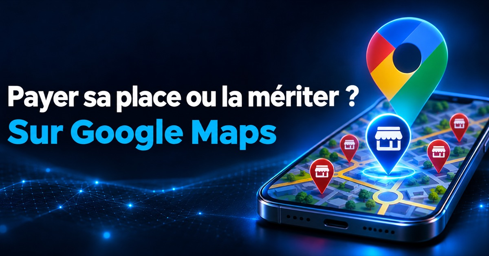

La réponse courte
Le SEO local est le socle, Google Ads un accélérateur — et dans la plupart des cas il ne s'agit pas de choisir l'un contre l'autre, mais de décider dans quel ordre. Le classement naturel sur Google Maps ne s'achète pas : Google l'écrit en toutes lettres. Il se construit avec votre fiche d'établissement, votre site et vos avis, et produit des contacts tant que vous l'entretenez. Google Ads, lui, vous place en tête dès le lendemain, mais chaque clic se paie et la visibilité s'arrête avec le budget. Règle pratique : si votre fiche est incomplète ou sans avis, commencez par elle — les annonces sur Maps s'appuient de toute façon dessus. Si votre métier vit de l'urgence ou si vous visez une zone éloignée de votre adresse, le payant devient pertinent, en complément.
Sur Google Maps, trois places qui ne s'obtiennent pas de la même façon
Quand un client tape « plombier Montpellier », il peut voir trois types de résultats. Les confondre conduit à payer pour ce qui aurait pu s'obtenir gratuitement, ou à attendre ce qui ne viendra jamais.
| Emplacement | Comment on l'obtient | Ce qu'on paie |
|---|---|---|
| Résultats locaux naturels (pack local, liste Maps) | Pertinence, distance et notoriété de votre fiche — le SEO local | Rien à Google : du temps, ou un prestataire |
| Annonces Google Ads sur Maps | Une campagne Google Ads reliée à votre fiche d'établissement | Selon le type de campagne, au clic ou à la vue |
| Annonces Local Services | Un programme distinct, avec vérification de l'entreprise | Chaque prospect valide (appel, message) |
Pour les résultats naturels, l'aide de Google est sans ambiguïté : « Il n'existe aucun moyen d'obtenir une meilleure place au classement local Google sur demande ou contre rémunération » (Aide Fiche d'établissement Google). Le classement y repose sur trois critères : la pertinence de la fiche pour la recherche, la distance entre l'établissement et la personne qui cherche, et la proéminence, c'est-à-dire la notoriété de l'entreprise.
Pour les annonces, Google distingue trois formats sur Maps : des repères sponsorisés, carrés, posés sur la carte ; des annonces en haut de la liste des résultats Maps ; des annonces intégrées à la fiche d'un établissement. Deux conditions comptent pour une TPE : il faut indiquer l'adresse de l'établissement et associer sa fiche ou ses composants Lieu au compte Google Ads, et il est impossible, à ce jour, de diffuser des annonces uniquement sur Maps — la campagne tourne aussi ailleurs (Aide Google Ads, « Diffuser des annonces dans Google Maps »).
Les Annonces Local Services forment un troisième circuit, distinct de Google Ads. Elles s'affichent tout en haut des résultats de recherche, sont facturées au prospect et non au clic, et réservées à certains métiers — la page française de Google cite notamment la plomberie, l'électricité, la couverture, la menuiserie et la maçonnerie. L'entreprise est vérifiée au préalable : en France, Kbis, numéro SIRET et assurance responsabilité civile professionnelle (page Annonces Local Services de Google).
Ce que coûte un clic dans l'Hérault : relevé du 9 novembre 2026
Le prix d'un clic dépend surtout du métier, beaucoup moins de la taille de l'entreprise : sur un dépannage urgent, il peut dépasser 20 €. Nous avons relevé le 9 novembre 2026, à partir des données de Google Ads pour la France (via DataForSEO), le coût par clic estimé de quelques recherches locales du département.
| Recherche | Recherches par mois | Coût par clic moyen | Enchère pour le haut de page |
|---|---|---|---|
| serrurier montpellier | 2 900 | 23,68 € | 5,20 à 23,14 € |
| plombier montpellier | 5 400 | 8,61 € | 3,78 à 16,11 € |
| couvreur béziers | 480 | 7,58 € | 2,69 à 14,24 € |
| plombier béziers | 140 | 6,08 € | 4,04 à 23,21 € |
| électricien montpellier | 320 | 1,44 € | 2,84 à 15,04 € |
Ces chiffres sont des estimations de Google, pas des factures : le prix réel dépend de vos enchères, de la qualité de vos annonces et de la concurrence du jour. Ils donnent tout de même l'ordre de grandeur. À 8,61 € le clic, cent visiteurs venus d'une annonce « plombier montpellier » coûtent environ 860 € — et un visiteur n'est pas un client. Le calcul qui compte est donc : combien de clics faut-il pour obtenir un chantier, et que rapporte ce chantier ? Sans mesure des appels et des demandes de devis, une campagne se juge à l'aveugle.
Quand le SEO local passe d'abord
Le SEO local passe d'abord dès que votre fiche Google n'est pas au niveau, parce que tout le reste s'appuie sur elle — y compris les annonces Maps, qui reprennent votre adresse, vos horaires et vos avis.
- Votre fiche est incomplète ou peu notée. Une annonce qui renvoie vers une fiche sans photos, avec trois avis anciens, paie des clics pour un client qui ira voir le concurrent juste en dessous. Le chantier de départ est décrit dans notre page Google Business Profile.
- Vos clients cherchent près de chez vous. La distance fait partie des trois critères du classement naturel : sur votre commune et les communes voisines, une fiche soignée a toutes ses chances sans payer.
- Votre budget est contraint. Le SEO local coûte du temps ou une prestation ponctuelle, puis de l'entretien ; ses résultats ne s'arrêtent pas le jour où vous cessez de payer.
- Votre métier se choisit sur la confiance. Pour un architecte, un cabinet comptable ou un artisan d'art, le client compare, lit les avis, visite le site. C'est le terrain du référencement, pas celui de l'annonce.
L'ordre des chantiers — fiche la première semaine, site le premier mois, avis et mentions en continu — est détaillé dans notre guide du SEO local pour TPE/PME. Et si votre fiche est déjà soignée sans que le téléphone sonne, la cause est souvent ailleurs : nous l'expliquons dans pourquoi une fiche Google ne suffit pas.
Quand Google Ads se justifie
Google Ads se justifie quand le temps vous coûte plus cher que les clics : un besoin urgent à capter, une zone hors de portée du classement naturel, ou une période où il faut des contacts tout de suite.
- Les métiers d'urgence. Serrurerie, plomberie, vitrerie : le client appelle le premier numéro qu'il voit. Les coûts par clic les plus élevés du relevé ci-dessus sont précisément là.
- Une zone éloignée de votre adresse. Le classement naturel favorise les établissements proches de la personne qui cherche. Pour prospecter une ville à 30 km de votre siège, l'annonce est souvent le seul moyen d'y apparaître.
- Un lancement ou une saison. Ouverture, nouvelle prestation, pic saisonnier : le payant comble l'écart le temps que le référencement se construise.
- Un test de marché. Quelques semaines de campagne disent, chiffres en main, si une prestation intéresse avant d'y consacrer des pages entières.
Pour les métiers éligibles, les Annonces Local Services méritent une comparaison avant de lancer une campagne classique : vous payez un contact, pas une visite. Mais le prix d'un prospect varie selon le métier et la zone, et Google indique que les avoirs pour prospects non pertinents ne sont pas disponibles en Europe (Aide Local Services, « Fonctionnement des prospects ») : un mauvais appel facturé reste facturé.
La combinaison qui tient la route pour une TPE
Pour la plupart des TPE et PME locales, la combinaison raisonnable tient en trois temps : une fiche et un site solides d'abord, un budget publicitaire ciblé ensuite, et une décision chiffrée au bout de quelques mois.
- Le socle. Fiche Google complète, avis récents avec réponses, coordonnées identiques partout, et un site qui répond clairement à « quoi, où, combien, comment vous joindre ». Sans site convaincant, une annonce paie une visite qui repart — c'est l'enjeu d'un site internet d'artisan bien construit.
- L'accélérateur ciblé. Si vous l'activez, réservez le budget aux prestations qui rapportent le plus, aux heures où vous décrochez, et aux zones où le naturel ne vous place pas.
- La mesure. Comptez les appels et les demandes de devis par origine — fiche, site, annonce. C'est ce comptage, pas l'intuition, qui dira s'il faut augmenter, réduire ou couper le budget payant.
Un dernier point, souvent oublié : une partie des clients ne passe plus par la carte pour se faire une première liste, mais par une réponse d'IA. Aucune annonce n'y achète une place ; ce sont les mêmes fondations — fiche, site clair, mentions sur des sites tiers — qui y font exister une entreprise. Nous l'expliquons dans GEO — visibilité dans les IA.
Questions fréquentes
Peut-on payer pour être mieux classé dans le pack local de Google Maps ?
Non. Google indique qu'il n'existe aucun moyen d'obtenir une meilleure place au classement local sur demande ou contre rémunération. Payer permet d'apparaître dans des emplacements publicitaires marqués comme tels, au-dessus ou à côté des résultats naturels, pas de remonter dans ces résultats.
Faut-il une fiche Google Business Profile pour faire de la publicité sur Google Maps ?
En pratique, oui. Selon l'aide Google Ads, il faut indiquer l'adresse de l'établissement, associer la fiche d'établissement au compte Google Ads pour les repères sponsorisés, et associer des composants Lieu pour les annonces dans les résultats Maps. La fiche est donc le socle commun du référencement local et de la publicité sur la carte.
Combien coûte un clic Google Ads pour un artisan ?
Cela dépend surtout du métier. Dans notre relevé du 9 novembre 2026 sur des données Google Ads pour la France, le coût par clic moyen estimé allait de 1,44 euro pour « électricien montpellier » à 23,68 euros pour « serrurier montpellier », en passant par 8,61 euros pour « plombier montpellier ». Ce sont des estimations : le prix réel dépend des enchères et de la concurrence.
Combien de temps faut-il pour voir l'effet du SEO local ?
Il n'existe pas de délai garanti. Une fiche Google complétée produit souvent ses premiers effets en quelques semaines sur les recherches proches de votre adresse ; un site et des avis se construisent sur plusieurs mois. C'est précisément la raison d'être du payant : couvrir la période où le référencement se construit.
Que sont les Annonces Local Services et sont-elles disponibles en France ?
Ce sont des annonces facturées au prospect, c'est-à-dire à l'appel ou au message reçu, et non au clic. Google propose ce programme en France pour certains métiers, notamment la plomberie, l'électricité, la couverture, la menuiserie et la maçonnerie, après vérification de l'entreprise : Kbis, SIRET et assurance responsabilité civile professionnelle.
Si j'arrête Google Ads, est-ce que je perds ma visibilité ?
Vous perdez la visibilité payante dès l'arrêt du budget : les annonces cessent de s'afficher. Votre place dans les résultats naturels, elle, ne dépend pas de la publicité et reste ce que votre fiche, votre site et vos avis lui permettent d'être. C'est pourquoi il vaut mieux construire le socle avant de compter sur le payant.